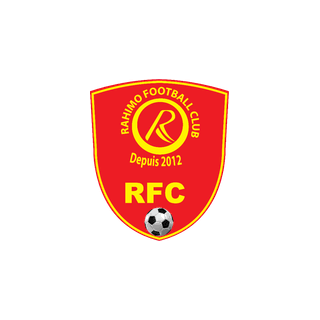
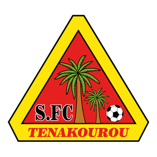

Le joueur en un coup d'œil
Nour-Kebir Yaméogo évolue à Salitas FC : 0 match(s), 0 minute(s), 0 but(s) et 0 passe(s) décisive(s) cette saison en Faso Foot Ligue 1.
Pourquoi le recruter ?
Synthèse méthodique pour dirigeants et recruteurs : chaque constat s'appuie sur les données réelles du championnat.
Le test du recruteur : 5 questions
Une méthode simple pour décider : chaque question reçoit un feu vert, orange ou rouge, calculé sur les chiffres réels.
💡 Conseil du recruteur : un bon dossier = il joue + il fait gagner des points + il est discipliné + on l'a vu jouer.
Points forts
- 🔎 Pas de signal statistique marquant pour l'instant : à étudier en vidéo.
Ce qu'il apporte à votre équipe
- 🔗 Relie défense et attaque : récupère et distribue vers les finisseurs.
- 🧪 À tester : visionner un match complet avant toute décision.
Points de vigilance
- ⚠️ Seulement 0 match(s) : échantillon insuffisant pour conclure.
- ℹ️ Âge : non communiqué, à demander au club.
- ℹ️ Taille : non communiqué, à demander au club.
- ℹ️ Pied fort : non communiqué, à demander au club.
- Les matchs de son club sont analysés en vidéo, mais ce joueur n'a pas pu y être identifié avec certitude (numéro illisible ou non confirmé) ou ses mesures ont été écartées : aucune donnée vidéo n'est publiée plutôt qu'une donnée douteuse.
Clubs étrangers dont l'effectif a besoin de son poste
Parmi les championnats d'Europe, d'Asie et des Amériques, clubs classés par besoin au poste « Milieu » : blessés, effectif étroit, prêts, fins de contrat, âge et gabarit recherchés, style de jeu.
- Effectif étroit : 1 joueur(s) disponible(s) au poste (minimum conseillé 3)
- 1 joueur(s) à ce poste en fin de contrat d'ici juin 2027 : le club devra les remplacer
- Club qui recrute jeune : 30 recrues en 2 ans, âge moyen à l'arrivée 22.1 ans
- 1 blessé(s) à ce poste dont 1 de longue durée : Felix Osei Agyemang
- Effectif étroit : 2 joueur(s) disponible(s) au poste (minimum conseillé 3)
- 3 joueur(s) à ce poste en fin de contrat d'ici juin 2027 : le club devra les remplacer
- Âge moyen des titulaires à ce poste : 22.3 ans (le sien : 21 ans)
- Effectif étroit : 2 joueur(s) disponible(s) au poste (minimum conseillé 3)
- 1 joueur(s) à ce poste en fin de contrat d'ici juin 2027 : le club devra les remplacer
- 1 joueur(s) du poste prêté(s) à l'extérieur
- Âge moyen des titulaires à ce poste : 22.0 ans (le sien : 21 ans)
- Effectif étroit : 2 joueur(s) disponible(s) au poste (minimum conseillé 3)
- 1 joueur(s) à ce poste en fin de contrat d'ici juin 2027 : le club devra les remplacer
- 2 joueur(s) du poste prêté(s) à l'extérieur
- Style de jeu du club en adéquation avec son rôle
- 2 blessé(s) à ce poste dont 2 de longue durée : Alex Freyr Hilmarsson, Róbert Elís Hlynsson
- 2 joueur(s) à ce poste en fin de contrat d'ici juin 2027 : le club devra les remplacer
- Âge moyen des titulaires à ce poste : 24.3 ans (le sien : 21 ans)
- Club qui recrute jeune : 18 recrues en 2 ans, âge moyen à l'arrivée 22.2 ans
- Effectif étroit : 2 joueur(s) disponible(s) au poste (minimum conseillé 3)
- 2 joueur(s) à ce poste en fin de contrat d'ici juin 2027 : le club devra les remplacer
- 1 joueur(s) du poste prêté(s) à l'extérieur
- Âge moyen des titulaires à ce poste : 24.0 ans (le sien : 21 ans)
Méthode : 20 % besoin du club à ce poste (résultats, blessés, effectif étroit) + 20 % besoin précis pour son profil (blessés, prêts, fins de contrat au poste exact) + 18 % gabarit (taille moyenne des titulaires du club à ce poste) + 14 % style de jeu du club (déduit de ses résultats) + 12 % âge moyen au poste + 16 % niveau du club / niveau estimé du joueur. Mineurs : bonus aux clubs à filière jeunes. Aucun plafond de valeur ; un club n'est proposé qu'à un nombre limité de joueurs par poste. Données publiques collectées le 2026-11-07
Les 4 graphiques du joueur
Quatre lectures du joueur, toujours calculées sur ses données réelles (aucun graphique illustratif).
Positionnement par poste (radar)
Centiles parmi les joueurs du même poste (100 = meilleur de la ligue). Gris : échantillon réduit, comparaison indicative.
Zone de poste
Zone du poste déclaré sur la feuille de match : un schéma, pas une mesure (aucune analyse vidéo pour ce joueur).
Comparaison à la moyenne du poste
Le joueur face à la moyenne des joueurs du même poste ayant au moins 3 matchs et 180 minutes.
Parcours de la saison
Présence (titulaire / entré en jeu / banc), buts, passes décisives, cartons et résultat de chaque journée.
Analyse scouting personnalisée
Rédigée à partir des données réelles du joueur : feuilles de match, comparaison avec les joueurs du même poste et analyse vidéo quand elle existe. Aucune appréciation n'est inventée.
Profil et utilisation
- Nour-Kebir Yaméogo : Milieu à Salitas FC, âge non renseigné, n°14.
- Utilisation : aucun temps de jeu enregistré cette saison.
Lecture vidéo
- Les matchs de son club sont analysés en vidéo, mais ce joueur n'a pas pu y être identifié avec certitude (numéro illisible ou non confirmé) ou ses mesures ont été écartées : aucune donnée vidéo n'est publiée plutôt qu'une donnée douteuse.
Points forts factuels
- Pas de point fort statistique net sur l'échantillon disponible.
À confirmer
- Échantillon réduit (moins de 3 matchs ou 180 minutes) : à confirmer sur davantage de matchs.
- Âge : non renseigné, à vérifier directement avec le club ou le joueur.
- Taille : non renseigné, à vérifier directement avec le club ou le joueur.
- Pied fort : non renseigné, à vérifier directement avec le club ou le joueur.
- Aucune analyse vidéo disponible : visionner les matchs complets ou demander une analyse à RSM Agency.
Recommandation de suivi
- À suivre sur les prochaines journées pour confirmer la tendance.
- Pour un contact ou une demande d'information : écrire à RSM Agency par WhatsApp.
Rendement sur la saison
Titulaire dans 0 des 0 match(s) observés sur les feuilles de match.
Journal des matchs 2026/27
Rôle, minutes, buts, passes et cartons match par match, avec les liens vers le Match Tracker et le match complet quand l'un des clubs suivis par RSM Agency est concerné.
| J | Date | Adversaire | Score | Rôle | Min | B | PD | Cartons | Liens |
|---|---|---|---|---|---|---|---|---|---|
| J8 |  Rahimo FC | D 3–1 | Remplaçant (non utilisé) | 0 | Fiche du match | ||||
| J7 |  Sporting Cascades | D 1–2 | Remplaçant (non utilisé) | 0 | Fiche du match |
Vidéos, highlights et matchs complets
Liens YouTube trouvés par recherche (titre et chaîne affichés ; aucune vidéo n'est copiée) et matchs complets de RSM Agency.
Parcours et statistiques de carrière
Parcours
Sélections et compétitions internationales
Aucune sélection ni compétition internationale connue.
Statistiques par compétition (championnat et coupes)
| Saison | Compétition | Équipe | M | B | PD | Min | CJ |
|---|---|---|---|---|---|---|---|
| 2026/2027 | FasoFoot Ligue 1 | SAL | 0 | 0 | 0 | 0 | 0 |
| 2026 | Coupe du Faso | SAL | 1 | 0 | 0 | 44 | 0 |
| 2025/2026 | FasoFoot Ligue 1 | SAL | 7 | 0 | 0 | 334 | 1 |
Identité et contexte
| Club | Salitas FC |
| Poste | Milieu |
| Numéro | 14 |
| Âge | — |
| Naissance | — |
| Nationalité | Burkina Faso |
| Taille | — |
| Pied fort | — |
Sources : feuilles de match de la Faso Foot Ligue 1, profils de carrière, analyse vidéo RSM Agency (valeurs approchées). Les champs « — » ne sont pas renseignés : aucune valeur n'est inventée.